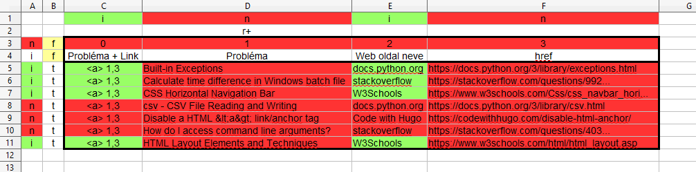

A [P] programját ( ↑:2024.09.29/3 ) felbonthatjuk két
részre:
t_csv [P_adatelőkészítés][P_html_táblázat_készítés] t_html
A [P_html_táblázat_készítés] az előkészített / könnyen kezelhető
adatok alapjá elkészít egy HTML szintakszisnak megfelelő,
egyszerű felépítésű táblázatot:
A <table> elemnek lehetnak CSS osztályai.
Lehetnek fejsorai.
Lehetnek törzssorai.
A fej és törzs oszlopok száma egyenlő és
a törzs oszlopok a nekik megfelelő fej
oszlopok alatt helyezkednek el.
A [P_html_táblázat_készítés] nem végez semmilyen
átalakítást az adatokon, egyszerűen összerakja
a táblázatot.
Mi kell ehhez?
A <table> elem CSS osztályai.
(Több ösztály szóközzel elválasztva.)
Nem kötelező a léte az ilyen CSS osztálynak
vagy osztályoknak.
A táblázat fejsorai. Minden sorban azonos
számú cella van. Minden cella egy <dh>
elemnek felel meg.
A fejsorok egy listát alkotnak, ami üres
is lehet.
A táblázat törzssorai. Minden sorban azonos
számú cella van. Minden cell egy <dt>
elemnek felel meg.
A törzssorok egy listát alkotnak, ami üres
is lehet.
-
Az [P_adatelőkészítés] (↑:2024.10.02/1) programnak
elő kell állítania a p_table_class:str, p_fejsorok:list,
p_torzssorok:list argumentumokat, amivel a [P_html_táblázat_készítés]
programot táplálni lehet.
A forrás a t_csv tábla.
A paramétereket megadhatjuk a [P] működésekor, de megadhatjuk
a t_csv táblában is.
Válasszuk a második esetet! Az első három sor és az első
két oszlop legyen vezérlő oszlop. Vegyünk egy példát!

1. ábra, CSV táblázat a problémákról és a megoldásra mutató linkekről
Ez alapján szeretnénk egy olyab táblázatot, ami valahogy
így néz li:
2. ábra, Eredmény táblázat a problémákról és a megoldásra mutató linkekről
1. ábra
A táblázat tartalmi része a C5:F11 területen van.
A C1:F1 terület mondja meg, hogy melyik oszlopok kerülnek
az eredmény táblázatba, másszóval melyik oszlopok lesznek
láthatók:
i = látható
n = nem látható
A C2:F2 terület mondja meg, hogy melyik oszlop szerint kell
rendezni táblázat (törzsét). Csak egy cellába írhatunk egy
rendezést meghatározó jelet. Ez a jel lehet:
r+ : növekvő rendezettség
r- : csökkenő rendezettség
A táblázat fej része, a fejsorai a C3:F4 területen van.
Miért? Mert a B3:B4 területen a cellákban f betű
szerepel. Ezek az f betűk jelzik, hogy a hozzájuk
tartozó sorok fejsorok.
A táblázat törzs része, a törzssorai a C5:F11 területen
van.
Nem minden fej- és törzssor kerük be az eredmény táblába,
nem mindegyik lesz látható. Az A3:A11 terület
mondja meg hogy melyik:
i = látható
n = nem látható
A táblázattörzs celláiban kétféle dolog lehet:
egyszerű szöveg
utasítás egy HTML elem létrehozásához
Jelen esetben ez az utasítás: <a>,1,3
ami azt jelenti, hogy létre kell hozni az <a>
HTML elemet, aminek az "href" attribútumát az 1.
cellából, a "text" értékét a 3. cellából kell
venni (a számokat ugyan abban a sorban és a táblázat tartalmi
részét figyelembevéve kell érteni).
2. ábra
Ez mutatja hogy milyen eredményt szeretnénk elérni.
Nagyon szépen kiszinezett példával mutattam be, hogy a [P_adatelőkészítés] (↑:2024.10.02/1)
programnak milyen kiindulási CSV táblából kellene előállítania
a [P_html_táblázat_készítés] program argumentuamit. De...
Egy kicsit sokallom azt a munkát, amit bele kellene ölnöm
a [P_html_táblázat_készítés] megalkotásába. Ezért eszembe
jutott, hogy az OpenOffice/Calc programjával elő tudok
állítani, valami nagyon gasonlót. Nézzük!
Az OpenOffice/Calc-al az adatokat szépen táblázatba
rendezhetem. A cellákba kifejezéseket is írhatok, így
HTML elemeket is létre tudok hozni:
3. ábra, OpenOffice/Calc, kiinduló nyilvántartás.
A 3. ábra A1:D1 területe a címsor. Erre a HTML elemek készítésénél
nincs szükségünk. Csak arra kell, hogy az adatokat a megfelelő
oszlopba írjuk.
Az A2:D5 terület a táblázat lényegi területe. Ebben van
az az ötlet, hogy egy cellában összeállíthatunk egy HTML
elemet, jelen esetben egy anchor elemet. Pl. az A2 cellában: ="<a href='" & D2 & "'>" & B2 & "</a>"
Folytatom a ( ↑:2024.10.10/3 ) szakasztól.
Hohó! Ha egy <a> elemet össze tudok rakni, akkor
a táblázat egy sorát is. Ezt már nem írom le, mert elég
kacifántos, másszóval nem szép.
Írjunk makró függvényeket, amik az egyes HTML elemeket összeállítják
a táblázat celláiból:
html_tr() táblázat sor
html_td() soron belül adatcella
html_a() anchor (horgony) elem
Ezek segítségével egyszerűbben leírható egy táblázatsor
és az aposztrófokkal és macskakörmökkel való bűvészkedése
sincs gondunk: =HTML_TR(HTML_TD(HTML_A(C2;A2)) & HTML_TD(B2))
Az eredmény: <tr><td><a href='https://cccccc3.com/dddd'>prob_aaaaa3</a></td><td>aaaaaa3</td></tr>
Mintha már készen is lennénk. . . De van egy kis
probléma. Ha a HTML_TD() függvény paramétere olyan sztring
ami nem megengedett HTML karaktere tartalmaz, az összezavarja
a böngészőt és nem tudja helyesen megjeleníteni a táblázatot.
ezért kell még egy függvény, ami kicseréli a proglémás karaktereket
HTML karakter entitásokra. Ez a html_tovalidstring()
függvény.
Ezzel az OpenOffice/Calc kifejezésünk így alakul: =HTML_TR(HTML_TD(HTML_A(C2;HTML_TOVALIDSTRING(A2))) & HTML_TD(B2))
Ez pedig így működik:
4. ábra, Táblázatsorok átalakítása HTML kódda OpenOffice/Calc-al. Végleges.
Összefoglalva:
Egy OpenOffice/Calc-ban vezetem a táblázatot, amiben
az egyik oszlopban a makró függvényekkel létrehozom
a táblázat sorait. (Minden OpenOffice sor egy HTML
táblázat sor.)
Egy új tétel beírását az utolsó sor után írom.
Rendezem a táblázatot.
A HTML sorokkal felülírom a cél HTML táblázat sorait.
A használt OpenOffice makrók kódjai:
rem ----------------------------
rem HTML elem készítés
rem ----------------------------
function html_td(p_text as string) as string
html_td = "<td>" & p_text & "</td>"
end function
function html_tr(p_td_elemek as String) as string
html_tr = "<tr>" & p_td_elemek & "</tr>"
end function
function html_a(p_href as string, p_text as string) as string
html_a="<a href='" & p_href & "'>" & p_text & "</a>"
end function
function html_tovalidstring(p_string as string) as string
rem A "p_string"-ben lévő tiltott HTML karakterek cseréje karakter entitásokra.
dim v_eredmeny as string
rem
v_eredmeny = Replace(p_string, "&", "&")
v_eredmeny = Replace(v_eredmeny, """", """)
v_eredmeny = Replace(v_eredmeny, "'", "'")
v_eredmeny = Replace(v_eredmeny, "<", "<")
v_eredmeny = Replace(v_eredmeny, ">", ">")
html_tovalidstring = v_eredmeny
end function